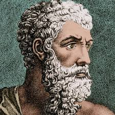

არისტოტელე

პლატონის მოსწავლე, ალექსანდრე მაკედონელის აღმზრდელი ძვ. წ. 343-დან, ძვ. წ. 335 ათენში დააარსა ლიცეუმი (ლიკეიონი), რომელიც ცნობილია პერიპატეტიკური სკოლის სახელით. პლატონთან და სოკრატესთან (პლატონის მასწავლებელთან) ერთად წარმოადგენს თანამედროვე ფილოსოფიის დასავლური სკოლის ერთ-ერთ ყველაზე მნიშვნელოვან დამფუძნებელს. ალექსანდრე მაკედონელის სიკვდილის შემდეგ არისტოტელე გაეცალა ანტიმაკედონურ მოძრაობას, გადასახლდა ვებეაზე ქ. ქალკიდაში, სადაც მალე გარდაიცვალა. არისტოტელეს ნაშრომთა სრული კრებული ბერძნულად გამოსცა ალდუს მანუციუსმა ვენეციაში 1491-1498. უახლესია მ. ბეკერის გამოცემა 1831-1870. არისტოტელეს ნაშრომთა ციტირება მიღებულია ამ გამოცემის მიხედვით. ფორმალური ლოგიკის შემქმნელი